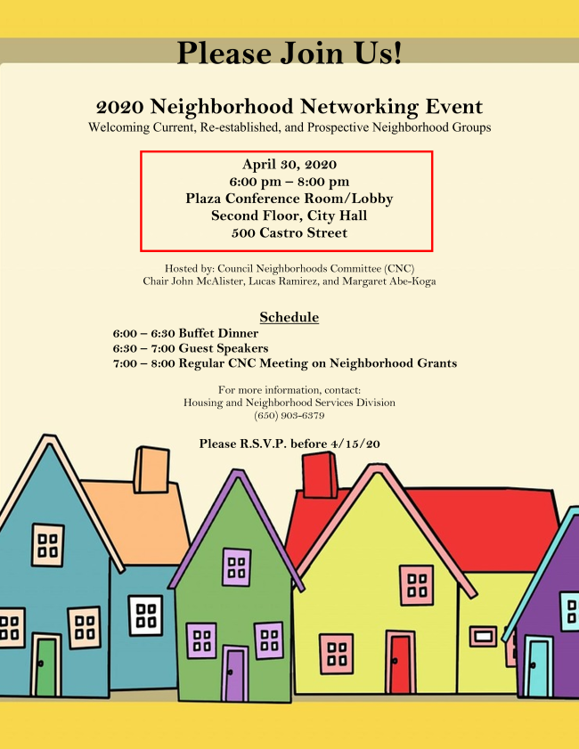

<section>
    <div class="row">
		<div class="columns small-12 hide-for-medium">
			{% include announce_menu.html %}
		</div>
		<div class="left-subnav medium-3 columns hide-for-small-only" data-sticky-container>
			<nav class="columns sticky" data-sticky data-top-anchor="positions" data-btm-anchor="clsepa" data-sticky-on="medium">
				<div id='nav-magellan' data-magellan>
					{% include announce_menu.html %}
				</div>
			</nav>
		</div>
      <div class="large-9 columns">
		<h1>Announcements</h1>
		<p>Due to the rapid pace of information, <a href="coronavirus.html">updates and resources relating to COVID-19 and the Coronavirus have been moved to its own page</a>. Other updates, announcements, and opportunities will remain on this page. </p>

		<h4 id="neighborhood">Neighborhood Grants Available</h4>
		<p>The application period for the 2020-2021 Neighborhood Grant is now open. Linked below are the documents for the grant application process. This information is also available on the <a href="https://www.mountainview.gov/depts/comdev/preservation/programs/cnc/grantprogram.asp" target="_blank">Neighborhood Grant Program Webpage</a>.</p>
		<p><b>This year’s deadline for grant applications has been extended to April 10, 2020 by 5pm.</b> </p>
		<p>If you know of a former neighborhood group that can be revitalized or a new group interested in forming, please help the City recruit and pass this grant application information along. Representatives are also invited to the Networking Event Dinner on Thursday, April 30, 2019 to learn more about other groups and neighborhood activities. </p>
		<p>Note: RSVPs are still being accepted. Should a cancellation occur, city staff will notify you accordingly. </p>
		<p><a class="button button-rounded-hover" href="https://files.constantcontact.com/010d49f3601/fc16f9b4-1cfc-42cd-bfc1-735598d0dc31.pdf" target="_blank">Neighborhood Grant Application</a> <a class="button button-rounded-hover" href="https://files.constantcontact.com/010d49f3601/5a753133-faa4-4ade-b13b-5c2a09fb94f7.pdf" target="_blank">Neighborhood Grant Guidelines</a></p>
		<p> </p>
		<hr>

      <h4 id="vta" data-magellan-target="vta">VTA is seeking transit rider input!</h4>
      <div class="inner">
          <p>VTA's Better Bus Stops Program is a new annual program to improve bus stops throughout VTA's network. </p>
		  <p>Every bus trip begins with some time waiting for the bus to arrive. In order to promote transit as a viable and attractive transportation option, the quality of the passenger waiting environment is an important component of the overall transit experience. Enhanced amenities include pavement work, shelters, benches, trash receptacles, signage, lighting and in future cycles, real-time information. </p>
		  <p><a href="https://www.vta.org/projects/better-bus-stops" target="_balnk">Take the Rider Survey here</a> 
		  </p>
	  </div>
	  <hr>	  

		<h4 id="jury">Court Seeks Candidates for Public Watchdog Agency</h4>
		<p><b>Recruitment begins for 2020-2021 Civil Grand Jury panel</b></p>
		<p>SAN JOSÉ, California (January 2, 2020): Presiding Judge Deborah A. Ryan has announced that the Superior Court of California, County of Santa Clara, is seeking volunteers to serve on the 2020-2021 Civil Grand Jury. </p>
		<p>The Civil Grand Jury, an arm of the Superior Court, is a part of the judicial branch of government.  It serves as the county’s civil watchdog agency and may examine all aspects of county and city government, special districts, and school districts.  It is authorized to inspect and audit books, records, and financial expenditures, to ensure accountability of public funds.   The Grand Jury may also inspect jails and juvenile detention facilities. </p>
		<p>Grand Jury service affords citizens the unique opportunity to contribute to the efficiency of local government and to play an integral part in ensuring that government officials are accountable to residents. </p>
		<p>Applicants must be 18 years of age or older, United States citizens, and residents of Santa Clara County. Service on the Grand Jury does require a time commitment of an average of 25 hours per week, or as determined by the Grand Jury. Candidates must be willing to dedicate this year of service to keep careful watch over various aspects of County government, and the one-year term of the 2020-2021 panel will begin on June 18, 2020. </p>
		<p>Persons interested in applying may obtain an application online at <a href="https://www.scscourt.org" target="_blank">www.scscourt.org</a> under “Civil Grand Jury”. Questions about informational events or about the Grand Jury may be directed to <a href="mailto:CGJ@scscourt.org" target="_blank">CGJ@scscourt.org</a> or by contacting Britney Huelbig, Deputy Manager for the Civil Grand Jury, at <a href="tel:4088822721" target="_blank">408-882-2721</a>. </p>
		<p><b>The deadline to submit applications is April 1, 2020. </b></p>
		<hr>
		
		<h4 id="sistercity">Support for the MV Sister City Exchange Students</h4>
		<p>From The MVSC City Exchange Students & MVSC Board: </p>
		<p>"This summer, five high school students will be traveling to Iwata, Japan in a foreign exchange program through the Mountain View Sister City Affiliation.  Through this program, we hope to emerge ourselves in the culture and open our minds to new ideas in Japan. </p>
		<p>To help raise money for our trip to Japan, we are teaming up with the Boon Supply Fundraiser.  Through this fundraiser supporters can buy shopping bags, totes, kitchen supplies, and much more from the online catalog.  Boon Supply will donate 40% of these purchases to our program for no additional cost.  To help fund raise, the link below will take you to our fundraiser where you can select <b>Shop This Cause</b> and proceed to make your purchases.  All purchases under the MVSC Affiliation support our program and help cover funds in our trip to Japan. </p>
		<p>If you have any questions or concerns feel free to contact me at <a href="maito:leslie.imai@gmail.com" target="_blank">leslie.imai@gmail.com</a>. </p>
		<p>Link to Boon Supply Click: <a href="https://www.boonsupply.com/collections/609362-mountain-view-sister-city-affiliation" target="_blank">here</a>."</p>
		<hr>

		<h4 id="caltrain">Caltrain Electrification</h4>
		<p>In Summer 2018, Caltrain began performing work along the railroad corridor in Mountain View. </p>
		<p>The activities during this time included locating underground utilities, testing soil conditions, inspecting signal/communication equipment, potholing, and pruning/removing trees in preparation for the installation and operation of the Overhead Contact System that will power electric trains. </p>
		<p>Caltrain crews will be extending the existing set-out track approximately 500 feet in order to accommodate on-track equipment required for Caltrain Electrification.  The current set-out track is between Farley Street and South Shoreline Boulevard in Mountain View.  Construction will require a staging area for foundation installation, pole installation, construction material and pole delivery and storage as well as for loading and unloading of train cars. The loading and unloading of construction train cars and equipment will require the use of trucks, loading of construction trains and occasional use of backup alarms. Staging is expected to begin in October 2019 with construction occurring over a 8-12 month period. </p>
		<p>Vehicles will enter the staging area off of Central Expressway at Farley Street.  Egress will occur south of South Shoreline Boulevard back onto the Central Expressway. </p>.
		<h5>CONSTRUCTION AREA MAP</h5>
		<br>
		<hr>

		<h4 id="green">Mountain View Green Building and Reach Codes FAQ</h4>
		<p>The City’s Community Development Department has created a new webpage to provide information regarding the recently adopted Reach Codes. </p>
		<p>Information regarding the City’s Amended Green Building Codes (MVGBC) and Reach Code: 
		<ul>
		<li><a href="https://tinyurl.com/wxrbwnh" target="_blank">https://tinyurl.com/wxrbwnh</a> </li>
		<li><a href="https://tinyurl.com/vgl56cj" target="_blank">https://tinyurl.com/vgl56cj</a> </li>
		</ul>
		</p>
		<hr>

		<h4 id="stateleg">New State Legislation</h4>
		<p>The California state legislature has adopted several bills that went into effect on January 1, 2020. A nice summary of several new laws is <a href="https://laist.com/2019/12/27/californias_new_laws_starting_jan_1_2020.php" target="_blank">available here</a>. </p>
		<p>Many of these laws are quite consequential, but particularly noteworthy are AB 1482 and SB 329. AB 1482 enacts a statewide rent cap (allowing annual rent increases no greater than 5% plus inflation) and prohibits landlords from evicting tenants without just cause. <b>It is important to keep in mind that the state law allow cities to enact stronger renter protections.</b> Renters in the City of Mountain View are protected by the Community Stabilization and Fair Rent Act (CSFRA), also known as Measure V. <a href="https://www.mountainview.gov/depts/comdev/preservation/rentstabilization/default.asp" target="_blank">More information about CSFRA is available here.</a> </p>
		<p>SB 329 prohibits discrimination against tenants with housing vouchers.</p>
	    
		<hr>
		
      </div>
    </div>
</section>
